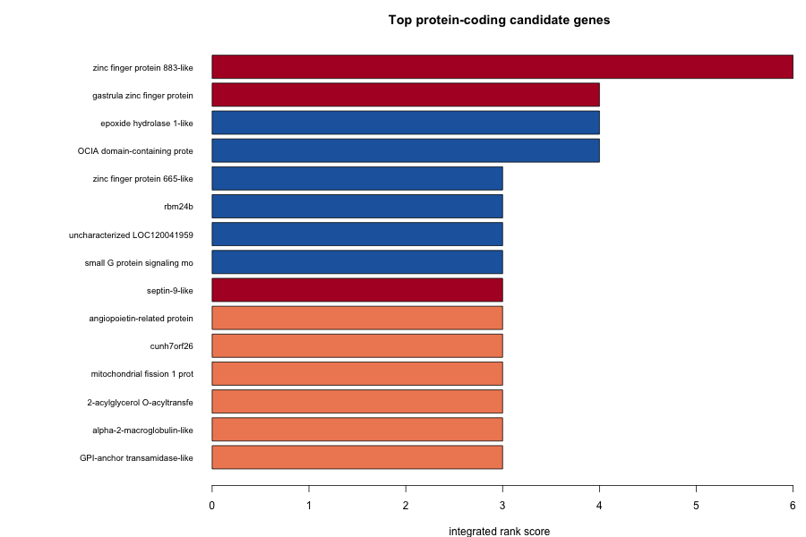

Lake Trout EpiGenomics Project
From Single-Reference Associations to Two-Genome Evidence — Salvelinus namaycush Ecotypes
Two Ecotypes, Two Genomes
Lake trout (Salvelinus namaycush) in the Great Lakes occur as divergent ecotypes that share water but not lifestyle:
- Lean: shallow-water dwelling, elongate body, low lipid content
- Siscowet: deep-water specialist, robust body, high lipid storage
The project asks: which genes carry the epigenetic and structural differences between the ecotypes, and what phenotypes might they shape? The first pass answered this against a single public reference genome. That reference was built from a lean-background fish, so every siscowet-specific signal was inflated by divergence and nothing could be checked from the other side. We have now assembled each ecotype’s own genome from PacBio HiFi reads, annotated both, aligned them to each other, and re-derived the key comparisons bidirectionally. This page reports what survived that test, what did not, and what remains open.
lean 2.58 Gb · siscowet 2.84 Gb
on native coordinates
66 with no caution flag
retained any two-genome support
Read this as hypothesis-generating, now with a stronger floor. The two-genome layer replaces single-reference association with bidirectional read evidence for a small set of genes, and it shows which earlier signals were reference artifacts. No functional validation has been performed, sample size is four fish per ecotype, and the assemblies are contig-level.
What Changed: Single Reference → Two Genomes
| Layer | Single-reference analysis (2025) | Two-genome analysis (2026) |
|---|---|---|
| Genome | NCBI SaNama_1.0, lean-background doubled haploid | Lean and siscowet hifiasm assemblies, haplotig-purged, 12,700 and 8,159 contigs |
| Annotation | 46,359 RefSeq genes | Liftoff transfer: 55,437 lean, 59,968 siscowet gene models; 50,379 shared |
| Structure | 3,465 stringent siscowet deletions, one direction only | SyRI structural-variant map for lean↔︎ref, siscowet↔︎ref, lean↔︎siscowet; ~18–20 % of reference PAVs are SV-confirmed |
| Presence/absence | Reads → reference only | Reciprocal PAV: each ecotype’s reads → the other’s genome. 340 siscowet-present and 343 lean-present regions, 1.57 Mb, 115 genes |
| Gene content | not testable | Ecotype-only gene sets, corroborated by the other assembly’s unmapped list: 1,474 lean-only, 3,040 siscowet-only; 2,359 copy-number divergent |
| Methylation | 302 DMRs on reference | still reference-based; native re-analysis is the next phase |
Plan and progress log: code/23-next-phase-research-plan.md.
How the Evidence Is Scored
Each reference gene is scored on five lines of evidence that differ in data type or direction. Three earlier lines (SyRI SV, reference PAV, Liftoff-only presence) all measure distance from the lean reference and co-occurred heavily, so they are collapsed into one.
| Line | Genes | What it measures |
|---|---|---|
| Reciprocal PAV | 114 | Region of one ecotype’s own genome with zero coverage in all four of the other ecotype’s read sets, flanked by covered sequence. Native, bidirectional, read-level. |
| Corroborated ecotype-only | 4,382 | Gene lifted into one assembly only and explicitly unmapped by Liftoff in the other. Two assemblies agree. (Unique reference genes; the 1,474 / 3,040 above count Liftoff rows including extra copies.) |
| Copy-number divergence | 2,359 | Liftoff copy count differs between the assemblies. Dominated by tRNA, snRNA, histone and protocadherin clusters. |
| DMR | 181 | Reference-based differentially methylated region within 5 kb. |
| Reference divergence | 16,068 | Any of: SyRI SV, reference PAV, Liftoff-only ecotype presence. One line regardless of how many apply. |
| Tier | Definition | Genes | Flag-free |
|---|---|---|---|
| A | Reciprocal PAV + ≥1 other line | 77 | 66 |
| B | Corroborated ecotype-only or copy-number + ≥1 other line | 4,011 | 2,613 |
| C | DMR + reference divergence only (the earlier single-reference association) | 15 | 6 |
Caution flags mark noncoding biotypes, repeat and tandem families, and clusters of five or more same-family genes. Only tier A carries read-level evidence on native coordinates. Methods and full tables: analyses/23-integration/refined/README.md.
Native-Anchored Candidates (Tier A)
Seventy-seven genes sit in sequence present in one ecotype’s genome and absent from every read set of the other. Forty-eight are siscowet-present, twenty-nine lean-present. A selection of the flag-free, protein-coding set:
| Gene | Product | Present in | Lines | Axis |
|---|---|---|---|---|
gpia |
Glucose-6-phosphate isomerase a | siscowet | reciprocal PAV · CNV · ref | energy metabolism |
| LOC120028089 | Phosphoenolpyruvate carboxykinase, mitochondrial-like | siscowet | reciprocal PAV · ref | gluconeogenesis |
| LOC120024897 | cGMP-inhibited 3′,5′-cyclic phosphodiesterase B-like | siscowet | reciprocal PAV · corroborated-only · ref | insulin / lipolysis signalling |
| LOC120053718 | cAMP-specific phosphodiesterase 4D-like | lean | reciprocal PAV · ref | cAMP signalling |
| LOC120022070 | Growth factor receptor-bound protein 10-like | lean | reciprocal PAV · CNV · ref | insulin / IGF signalling, growth |
| LOC120066682 / LOC120053938 | Nuclear receptor ROR-alpha A (two paralogs) | lean / siscowet | reciprocal PAV · ref | circadian & lipid-metabolic regulator, one paralog per ecotype |
| LOC120030672 | Calsequestrin-1-like | siscowet | reciprocal PAV · ref | calcium handling, muscle |
cracr2b |
Calcium release-activated channel regulator 2B | siscowet | reciprocal PAV · ref | calcium signalling |
| LOC120056805 | Troponin T, fast skeletal muscle-like | siscowet | reciprocal PAV · ref | muscle |
| LOC120020198 | Synapsin-2-like | lean | reciprocal PAV · ref | neural |
| LOC120066463 | Contactin-1a-like | siscowet | reciprocal PAV · ref | neural adhesion |
bco2a |
Beta-carotene oxygenase 2a | siscowet | reciprocal PAV · ref | carotenoid / pigment |
ptprc, LOC120024920 |
PTPRC; MHC class I-related | lean / siscowet | reciprocal PAV · ref | immune, rapidly evolving |
Full list: two_genome_candidates_refined.tsv.
GO enrichment after tandem-cluster collapsing
Same-family genes within 50 kb of each other were collapsed to one representative in both the study sets and the background. This removes the cluster artifacts that drove several earlier signals (an 18-gene hemoglobin cluster in the lean-only set; histone, tRNA and snRNA arrays in the copy-number set).
| Gene set | GO term | Fold | FDR collapsed | FDR uncollapsed | Read as |
|---|---|---|---|---|---|
| Lean-only, corroborated | Voltage-gated calcium channel activity | 4.5 | 0.028 | 8×10⁻⁴ | survives; weakened but present |
| Lean-only, corroborated | Calcium ion transport | 2.5 | 0.062 | 9×10⁻³ | survives |
| Reciprocal PAV | Calcium ion binding | 2.5 | 0.10 | 0.09 | consistent, small set |
| Tier A | Cellular response to insulin stimulus | 22 | 0.02 | 0.02 | 3 genes; suggestive |
| Reciprocal PAV | Regulation of muscle contraction | 23 | 0.014 | — | 3 genes; suggestive |
| Lean-only, corroborated | Long-chain fatty acid metabolic process | 3.5 | 0.24 | 0.36 | the only lipid term below 0.25 |
The calcium-transport signal survives on native two-genome coordinates. The lipid-metabolism signal does not. No lipid term reaches FDR 0.1 in any two-genome set, collapsed or not. Tables: phenotype_survival_refined.tsv, cluster_diagnostics.tsv.
What Happened to the Earlier Headline Candidates
The single-reference analysis promoted four “convergent” genes (a DMR plus a stringent siscowet deletion) and a lipid axis built on exonic deletions. Under the two-genome model:
| Gene | Product | Earlier role | Now | Native support |
|---|---|---|---|---|
| LOC120032414 | Zinc finger protein 883-like | top convergent | Tier C: DMR + reference divergence only | no |
| LOC120040411 | Gastrula zinc finger XlCGF57.1-like | convergent | Tier B via copy-number, inside a 5-paralog cluster | weak |
| LOC120043843 | Septin-9-like | convergent | Tier C | no |
| LOC120039781 | Uncharacterized | convergent | Tier C | no |
| LOC120050008 | Angiopoietin-related protein 5-like (angptl5) |
lipid axis | Tier B: corroborated siscowet-only | assembly-level only |
| LOC120041635 | 2-acylglycerol O-acyltransferase 2-A-like (mogat2) |
lipid axis | reference divergence only | no |
| LOC120029926 | Epoxide hydrolase 1-like | lipid axis | Tier C | no |
The stringent siscowet “deletions” that defined these genes were largely reference-distance effects. That is the outcome the two-genome design was built to detect.

Hypothesized Links to Ecotype Biology, Revised
- ⚡ Calcium handling and excitability — the one axis supported at every stage: calcium-channel GO enrichment in the corroborated lean-only set, calcium-binding enrichment in the reciprocal PAV set, and calsequestrin-1 and
cracr2bamong the siscowet-present tier-A genes. Plausibly relevant to muscle and sensory function in a deep, cold, dark habitat. - 🔋 Energy metabolism and insulin signalling (new) —
gpia, mitochondrial PEPCK, two phosphodiesterases,grb10-like and a ROR-alpha paralog partition between the ecotypes on read-level evidence. A metabolic-rate or fuel-partitioning hypothesis fits the lean/siscowet contrast better than the earlier lipid-storage genes did, but it rests on a handful of genes. - 🫧 Lipid storage (demoted) — the defining siscowet phenotype, yet the earlier lipid-gene deletions were reference artifacts and no lipid GO term is enriched on native coordinates. Either the genomic basis is regulatory rather than structural, or it lives in genes Liftoff cannot see. Native methylation (next phase) and de novo annotation address both possibilities.
- 🛡️ Immune — PTPRC, an MHC class I-related gene, CEACAM and TRIM39 appear in tier A. These families evolve fast and vary in copy number within populations; treat as expected background until population-level data exist.
- 🩸 A hemoglobin cluster absent from the siscowet assembly — 18 hemoglobin genes on NC_052347.1 are lean-only and corroborated, but not flagged by reciprocal PAV, which is consistent with an assembly gap rather than a true loss. Flagged for read-level inspection rather than interpretation.
Interactive Genome Browsers
Explore methylation, PAV, gene, and ecotype-synteny tracks across the SaNama_1.0 assembly. Genes carry functional annotation, and lean/siscowet synteny blocks are projected onto the reference. JBrowse also offers a lean ↔︎ siscowet Linear Synteny View on the purged assemblies. Structural variant, reciprocal PAV and native methylation tracks will be added once Phase 3 completes.
🔬 IGV.js — quick exploration
Functionally-annotated genes · lean & siscowet synteny blocks · PAV insertions & deletions · CpG methylation (8 samples) · DMRs
🧬 JBrowse 2 — advanced analysis
Functionally-annotated genes (GFF3) · synteny blocks · PAV structural variants · CpG methylation · differential methylation · lean ↔︎ siscowet Linear Synteny View
Open the Linear synteny view and pick the lean_purged and siscowet_purged assemblies with the Lean ↔︎ Siscowet synteny track.
Interpretation Guardrails
Partly retired: the lean-reference caveat. Presence/absence and gene-content comparisons are now made on each ecotype’s own genome and cross-checked in both directions. The reference is still the shared coordinate axis for gene IDs, SVs and methylation, and the reference-divergence line still inherits its bias, which is why it counts once.
Contig-level assemblies and Liftoff sensitivity. Both genomes are thousands of contigs. The raw ecotype-only gene counts (5,058 lean, 9,589 siscowet) track assembly contiguity more than biology; only the ~30 % corroborated by the other assembly’s unmapped list are used as evidence, and the hemoglobin case above shows even those can be assembly gaps.
Methylation is still reference-based. The DMR line has not been re-derived on native coordinates, and no single CpG survives genome-wide correction. Phase 3 addresses this.
Small numbers, no validation. Four fish per ecotype. Tier-A GO terms rest on three to five genes each. All links are associations with no functional test; the liver RNA-seq comes from a separate parasite study and is orthogonal support at best.
Data & Methods
Genomes
- Reference: NCBI GCF_016432855.1 (SaNama_1.0), RefSeq GFF + GO
- Ecotype assemblies: hifiasm primary contigs from PacBio HiFi, purged with purge_dups; lean 2.58 Gb / 12,700 contigs, siscowet 2.84 Gb / 8,159 contigs. Annotated by Liftoff from the reference with reference-identical gene IDs.
Samples
| Ecotype | n | Data |
|---|---|---|
| Lean | 4 | PacBio HiFi with 5mC calling (bc2041, bc2068, bc2069, bc2070) |
| Siscowet | 4 | PacBio HiFi with 5mC calling (bc2071, bc2072, bc2073, bc2096) |
Analysis pipeline
- PacBio HiFi alignment to reference; CpG methylation and DMR calling
- Coverage/CIGAR PAV detection against the reference
- RefSeq functional annotation backbone; feature-to-gene assignment; GO over-representation
- hifiasm assembly per ecotype, purge_dups, Liftoff annotation, MCScanX synteny
- RagTag anchoring to reference chromosomes; MUMmer + SyRI structural-variant calling; PAV cross-validation
- Reciprocal PAV: each ecotype’s reads aligned to the other’s purged assembly (pbmm2, mosdepth, CIGAR)
- Shared / ecotype-only / copy-number gene sets from the two Liftoff annotations
- Five-line evidence model with tiers; tandem-cluster-collapsed GO over-representation
Next
- Phase 3 — ecotype-native differential methylation, harmonized through the lean↔︎siscowet alignment
- Phase 4 — BRAKER3 de novo annotation to recover genes absent from the reference
- Phase 5 — browser tracks for SV / reciprocal PAV / native DMRs; manuscript; NCBI assembly submission
Citation & Resources
- GitHub Repository: RobertsLab/project-lake-trout
- Two-genome plan and progress log:
code/23-next-phase-research-plan.md - Refined evidence model:
analyses/23-integration/refined/README.md - Single-reference annotation layer (2025):
code/18-diff-annotation-phenotype-plan.md